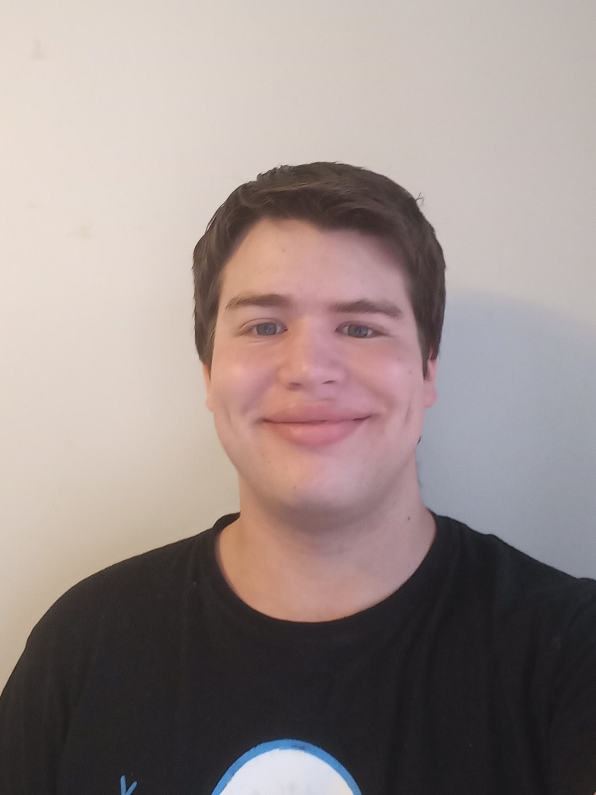
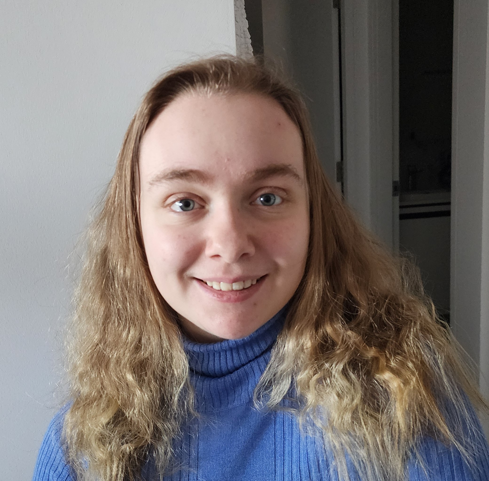
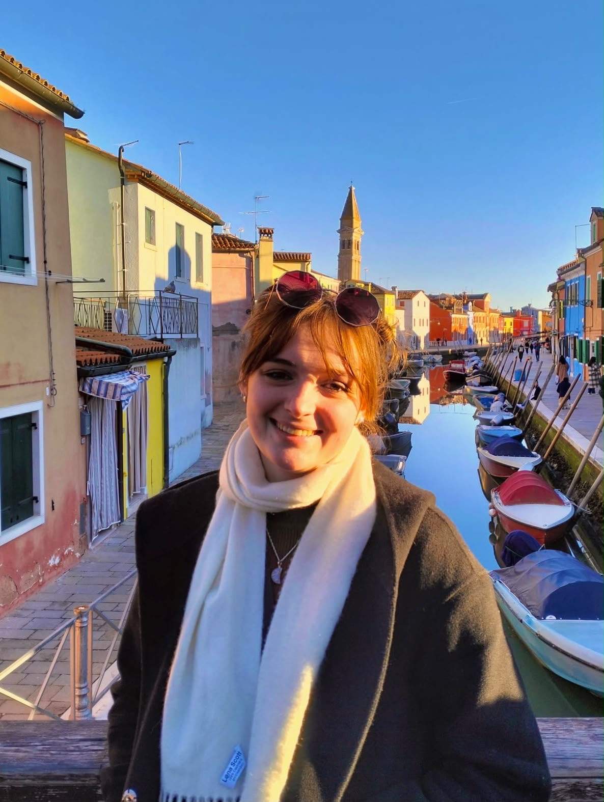

Degree: Flexible Double Degree in Bachelor of Advanced Computing (Research & Development) (Honours) / Bachelor of Mathematical Sciences.
Team Specialty: Jack (of all trades).
FRC Alum: Yes.
Fun description of personality: Enjoys learning about nudibranchs and other invertebrates. Likes finding connections between different musical pieces and motifs, and reading.
What utensil are you: Corn screw. No justification.
What shape do you resonate with the most: Mandelbrot Set.
Degree: Bachelor of Science (Advanced) (Honours) - Mathematics
Team Specialty: Electrification
FRC Alum: Yes
Fun description of personality: Wikipedia scuba-diver
What utensil are you: Milk frother
What shape do you resonate with the most: Mucube


Degree: Flexible Double Degree in Bachelor of Advanced Computing (Honours) and Bachelor of Design
Team Speciality: Fabrication
FRC Alum: Yes
Fun Description of Personality: Friendly! "The swaggiest" - Ayana. Enjoys playing too much minecraft and D&D.
What utensil are you: Spork
What shape do you resonate with the most: Star!